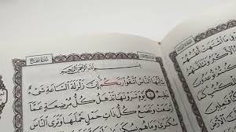

The Qur’an Hadith Learning School (QHLS) is one of ISM Kerala’s flagship educational projects, designed to spread authentic Islamic knowledge through a structured and systematic learning program.
Every year, QHLS follows a well-defined syllabus and curriculum, making Qur’anic learning accessible to students from all walks of life.
This year’s syllabus focuses on Surat al-Hajj, exploring its meanings, rulings, and lessons relevant to modern life

Classes are conducted once a week in centers across all districts of Kerala. Each session covers:
The QHLS academic cycle culminates in an annual examination held every June, designed to evaluate both understanding and memorization.
Vision:
To create a Qur’an-literate generation who understand, implement, and spread the message of the Qur’an and Hadith in their personal and social lives.
Mission:
To provide structured Islamic education based on the Qur’an and authentic Sunnah, cultivating both spiritual growth and intellectual excellence.
QHLS operates through hundreds of learning centers spread across Kerala’s 16 districts, providing an opportunity for students from every locality to join. Each center operates under district and zonal supervision, ensuring quality and consistency in education.
Join QHLS today!
Be part of a statewide network of students and teachers dedicated to the Qur’an and Sunnah.
Tap on 📞 icon to Dail District Convenor to know your nearest QHLS centre to get details and enroll in the class
The much-awaited results for QHLS'2025 is now available. You can view your results and download your certificates below.
🏆 View Results